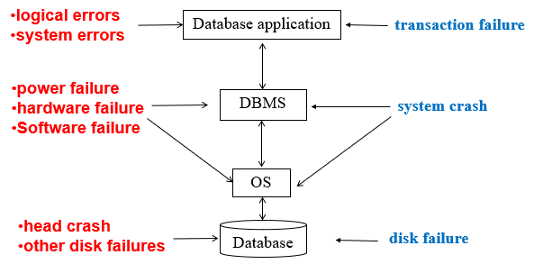
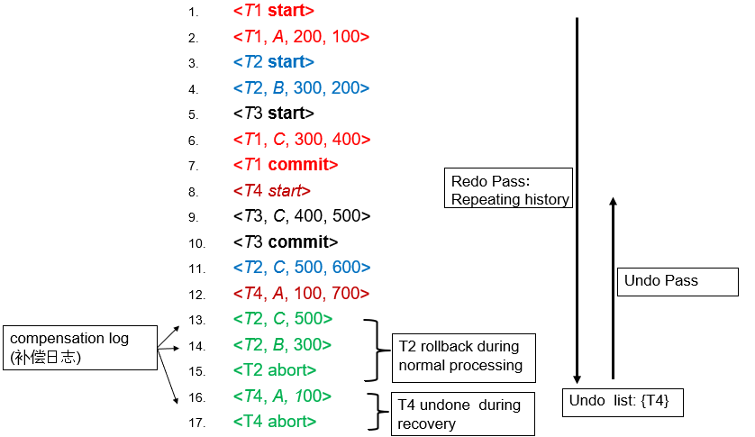
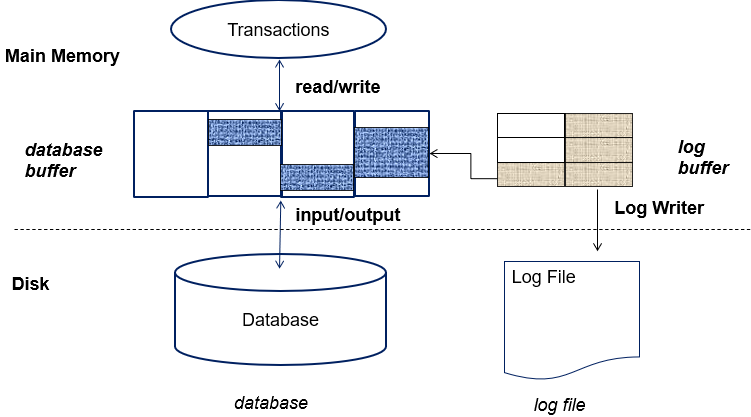
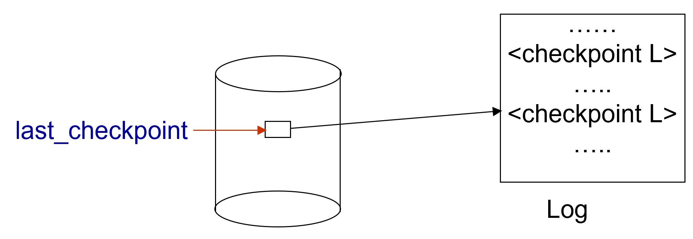
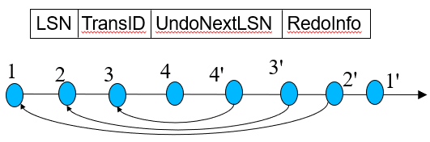
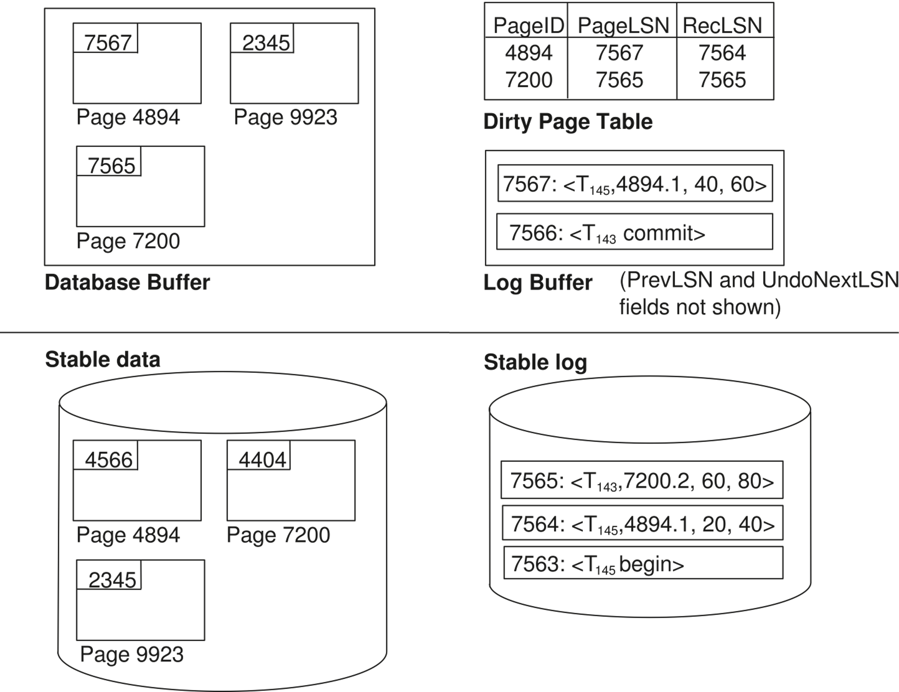
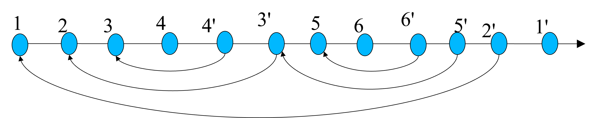
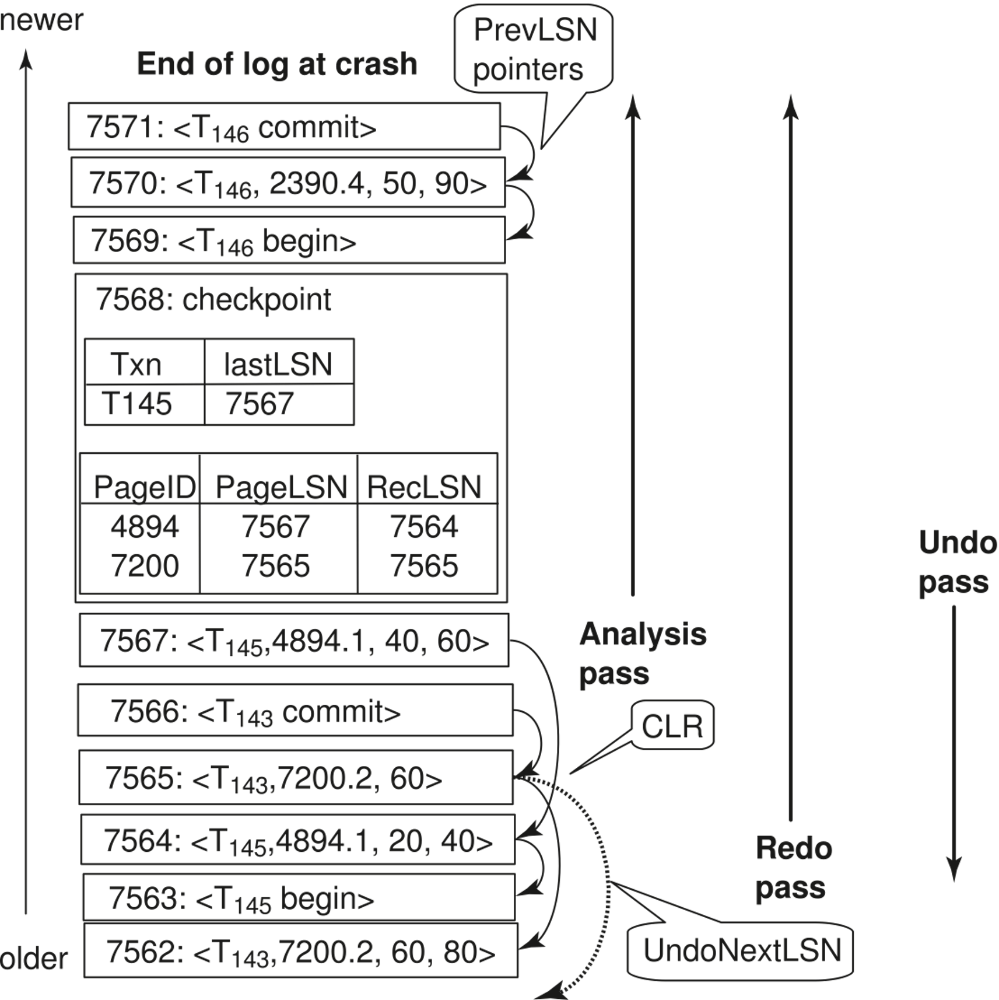

Chapter 19 Recovery System¶
- 特别与ACID中的Atomicity和Durability相关
Failure Classification¶

Storage Structures¶
- Volatile Storage: main memory / cache，系统崩溃时数据丢失
- Non-volatile Storage: disk / flash memory，系统崩溃时数据不丢失，但仍可能丢失数据
- Stable Storage: 理想的非易失性存储，系统崩溃时数据不丢失且不会损坏，虽没有但可以近似实现，例如多重备份。
Database Recovery¶
- 保证数据库的一致性和事务的原子性和持久性
恢复算法需要保证两方面： 1. 在正常的事务执行中，需要足够的日志信息来支持恢复。 2. 在系统崩溃后，能够使用日志信息恢复，从而保证原子性、持久性和一致性。
Idempotent(幂等性): An recovery algorithm is said to be idempotent if executing it several times gives the same result as executing it once.
Log-Based Recovery¶
Log File

-
恢复时，先Redo到最新的状态，再Undo（执行abort等操作）
-
在主存中的数据写到磁盘之前，必须先将日志写到磁盘。
- 只有在一个事务的 commit log record 被写入磁盘后，才可以认为该事务已经提交。（数据提交与否实际上无所谓，日志在的话最终一定可以提交）
- 日志和数据都有buffer，提高吞吐量。
Checkpoints¶
每次都从头开始恢复日志会很慢，因此引入检查点（checkpoint）来减少恢复时间，checkpoint相当于是恢复的起点： + 相当于一个快照 + 需要记录一个活跃事务表，记录在checkpoint创建时开始但未提交/终止的事务
Log Buffer & Database Buffer¶

-
Database Buffer: 用于缓存数据页，减少磁盘I/O
- no-force policy: 数据页不需要立即写入磁盘，可以在后续的checkpoint或日志刷新时写入。
- force policy: 更新的数据要在提交的时候立即写入磁盘。
-
steal policy: 允许将脏页（已修改但未写入磁盘的页）从数据库缓冲区中写回磁盘，即使事务尚未提交。
- 这样不用undo但对并发控制等不友好
Fuzzy Checkpointing¶
checkpoint 是为了减少恢复时间，但每次写日志、写数据都需要I/O操作，可能会影响性能（可能会忽高忽低），因此引入模糊检查点（fuzzy checkpointing）：
1. 临时停止事务的更新
2. 日志记录中写入一条

这样当系统崩溃时，可以从last_checkpoint指向的checkpoint开始恢复
Recovery with Early Lock Release and Logical Undo¶
-
不用严格遵循2PL协议，可以在事务执行过程中释放锁，例如此前提到的树形锁协议（tree locking protocol），在子节点都加锁后，父节点可以释放锁。
-
但是在放锁后可能会有其他事务来修改同一数据项，恢复时如果仍是物理回滚，则可能会直接覆盖掉其他事务的修改；因此需要Logical Undo，即记录需要的反向操作（例如插入->删除，+10->-10等），而不是直接覆盖。
记录的日志信息稍有不同：
ARIES Recovery Algorithm¶
ARIES is a state of the art recovery method
- 用LSN（Log Sequence Number）标记日志记录
- Physiological redo
- Dirty page table
- Fuzzy checkpointing
ARIES Data Structures¶
- Log sequence number (LSN): 每条日志记录都有一个唯一的LSN，递增
- Page LSN: 每个数据页都有一个Page LSN，指示对该页数据进行最新修改的日志
- Log record
- Dirty page table: 记录所有脏页
- Active transaction table: 记录所有活跃事务以及这些事务的最新LSN
Log Record¶
-
一般的日志记录有如下字段：
-
特殊的redo-only日志记录（即compensation log record）:

Dirty Page Table¶
- buffer中的脏页列表
- 对每一个这样的页，记录：
- Page LSN
- RecLSN: 这个LSN之前的日志记录都已经被写入磁盘

Checkpoint Record¶
包含：
- 脏页表（DirtyPageTable）和活跃事务列表
- 对每个活跃事务，记录该事务最后一条日志记录的LSN
- 磁盘固定位置存最近一次完成的检查点日志记录的LSN
脏页不会在检查点时立即写盘，而是通过后台线程持续异步刷盘
ARIES Recovery¶
3个阶段： 1. Analysis 2. Redo 3. Undo
Analysis Phase¶
- 从最近的检查点开始，分析日志记录，构建脏页表和活跃事务表。
- 将RedoLSN(即redo的起点)设置为脏页表中每个页的RecLSN中的最小值（即所有脏页中最早的没有写入磁盘的日志记录）
- undo-list设置为checkpoint记录中的活跃事务表
- 从undo-list中读取每个事务的最后一条日志记录的LSN
- 从checkpoint开始向前扫描
- 如果日志记录不在undo-list中，则将其添加到undo-list中
- 当找到一个update log record时:
- 如果该页不在脏页表中，则将其添加到脏页表中，并设置RecLSN为该日志记录的LSN
- 如果找到一个 transaction end log record，则将该事务从undo-list中删除
- 始终记录undo-list中每个事务的最后一条日志记录的LSN
analysis阶段的结果是： + RedoLSN: 最早的脏页日志记录，作为Redo的起点 + 脏页表中每个页的RecLSN + undo-list: 需要rollback
Redo Phase¶
Repeats history
- 从RedoLSN开始，向前扫描日志记录，一旦找到一个update log record:
- 如果该页不在脏页表中（这意味着该页数据已经写入磁盘或者未曾修改），或者日志记录的LSN比脏页表中page 的 RecLSN小（这意味着此日志已经写入磁盘），则跳过该日志记录
- 否则，从磁盘中取出该页。如果该页的Page LSN小于日志记录的LSN（这意味着该页数据未被更新），则redo该日志记录
Undo Phase¶
-
当对更新日志记录执行Undo时：
- 生成一个包含所执行撤销动作的补偿日志记录
- 图中将记录n对应的CLR标记为n'
- 将该CLR的UndoNextLSN设置为原更新日志记录的PrevLSN值
- 图中箭头表示UndoNextLSN的值
-
ARIES支持部分回滚：例如用于处理死锁情况，只需回滚到足以释放所需锁的程度

- 对undo-list 中的事务执行逆向日志扫描，具体优化如下：
- 初始定位：
- 为每个待撤销事务设置起始LSN（即分析阶段确定的该事务最后一条日志记录LSN）
- 每次选择所有待撤销事务中最大的LSN作为当前处理点，直接跳转到该位置执行撤销
- 撤销执行：
- 对于普通日志记录，撤销后将该事务的下一个待撤销LSN更新为当前记录的PrevLSN
- 对于补偿日志记录，则将下一个待撤销LSN更新为当前记录的 UndoNextLSN
- 跳跃优化：
- 跳过所有中间日志记录（因其已被撤销）
- 撤销操作按此前说过的逻辑进行，直到undo-list为空或所有事务都已撤销
- 初始定位：

创建日期: 2025年6月7日 21:41:01